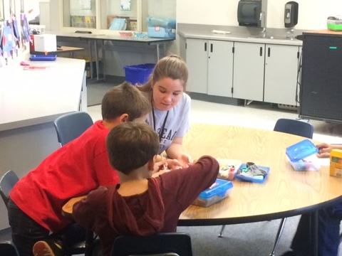
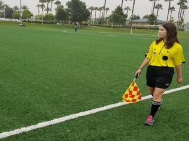
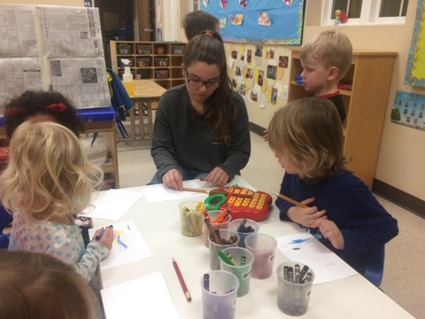
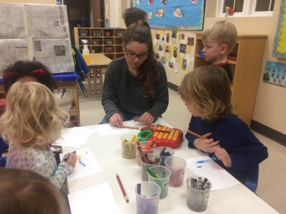
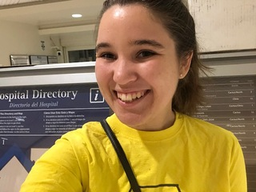
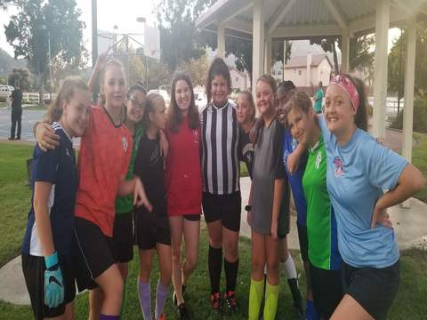
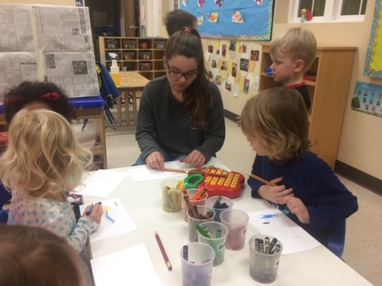
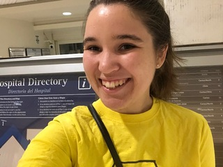
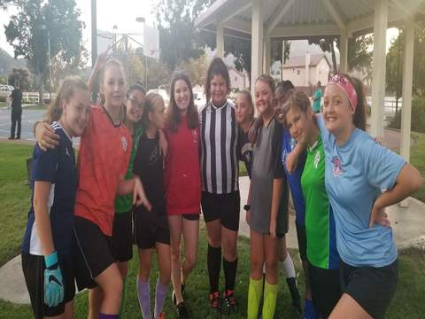

Rebecca Paplanus
I am currently a 3rd year student at the University of California-Riverside where I am double majoring in Liberal Studies and Education. After obtaining my BA, I hope to attend grad school to earn my teaching credential and masters degree in education so I can become an elementary school teacher. I have dreamt of being an elementary school teacher since before I started kindergarten and am extremely determined to make this childhood dream a reality.
I have volunteered at St. Thomas Episcopal Preschool in Temecula, CA for the past 4 years. I help the children ages 2-5 learn academic skills like their letters and coloring inside the lines aswell as social skills such as sharing or followind directions. I also have previous experience in a school setting volunteering in a 2nd grade classroom at Paloma Elementary in Temecula, CA. There, I helped direct children in lessons and activities revolving around spelling, reading, math, and science. Outside of the classroom, I have further practice working with children as a member of Project Sunshine in Riverside, CA. For a year now, I have visited children of various ages in the pediatric unit, playing games, making crafts, or simply talking with them while they are in the hospital.
In addition to education, sports have always been a passion of mine. I have been fortunate enough to combine these two passions by becoming an assistant soccer coach for Temecula Valley Soccer Association. For the past 3 years, I have coached 10 teams of girls and boys between the ages of 10 and 18 at both the recreational and all-star levels. My duties include teaching the children both basic and advanced skills, creating and implementing drills, writing line-ups, and ensuring the physical and emotional well-being of the athletes. I also have been a referee for the soccer league since 2018. In addition to enforcing the laws of the game, serving as a center referee has the added responsibilities of making all final decisions and ensuring that all the players, coaches, and members of the referee crew properly understand the rules.
Experience
Preschool Teaching Assistant
• Worked with children ages 18 months-5 years old
• Engaged children in activities helping to improve their writing, imaginative play, and motor skills
• Helped children develop proper social skills
Assistant Soccer Coach
• Create and plan drils for pracitces and lineups for gamedays
• Teach kids both basic and advanced skills
• Instill in the players the ideals of teamwork and sportsmanship
Soccer Referee
• Make sure players, coaches, and other referees understand the rules of the game
• Ensure player safety
• Assist in the development of my fellow referee crew
• Help run the league's annual referee clinic to help both new and experienced referees better understand the proper way to referee
• Make final decisions for all calls during the game
Elementary Classroom Assistant
• Work with 2nd graders
• Engage children in lessons about Science, Math, and English
• Helped kids work through their difficult social situations
• Provided targeted, individualized lessons for children struggling with writing and spelling
• Worked one-on-one with students who were struggling behaviorly to ensure they were staying on task and on track with their fellow students academically
Education
UC Riverside
Portfolio


 




 